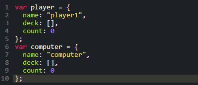
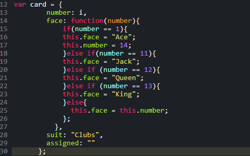

Hashes vs Objects
Let's Hash It Out
08/03/2015
So we dived head first into JavaScript this week and I was pretty nervous about switching languages so quickly. I was pleasantly surprised when I came across the syntax for a Javascript object. You see, they are incredibly similar. In fact there are very few things that are functionally different between JS Objects and Ruby Hashes.

Above is an example of a standard hash. The hash name is defined as superheroes and the curly brackets following the superhero definition is what tells the ruby compiler that this object is a hash. Each key value is defined with the colon preceding the key name and a "=>" that assigns the a value to the key.
In this example of a JS object the definition is relatively similiar. A "var" must be used to define any variable in javascript, including objects and even functions. The curly brackets are still used to denote an object with key-value pairs and commas are used after each line to tell the compiler that there are more keys in the object. One major difference is that the keys care defined by a colon after the key name and a "=>" is not necessary to assign a value to the key. Another really cool aspect of objects is that you can actually put a function as a property value. You could potentially change values based on what other values are in a function and change them automatically without recalling that function within your code. An example of this can be seen below.
So that's about it on the differences. Javascript comes with way less pre-loaded methods/functions so manipulating objects can be more cumbersome but ultimately they are very similar and a great programming tool.